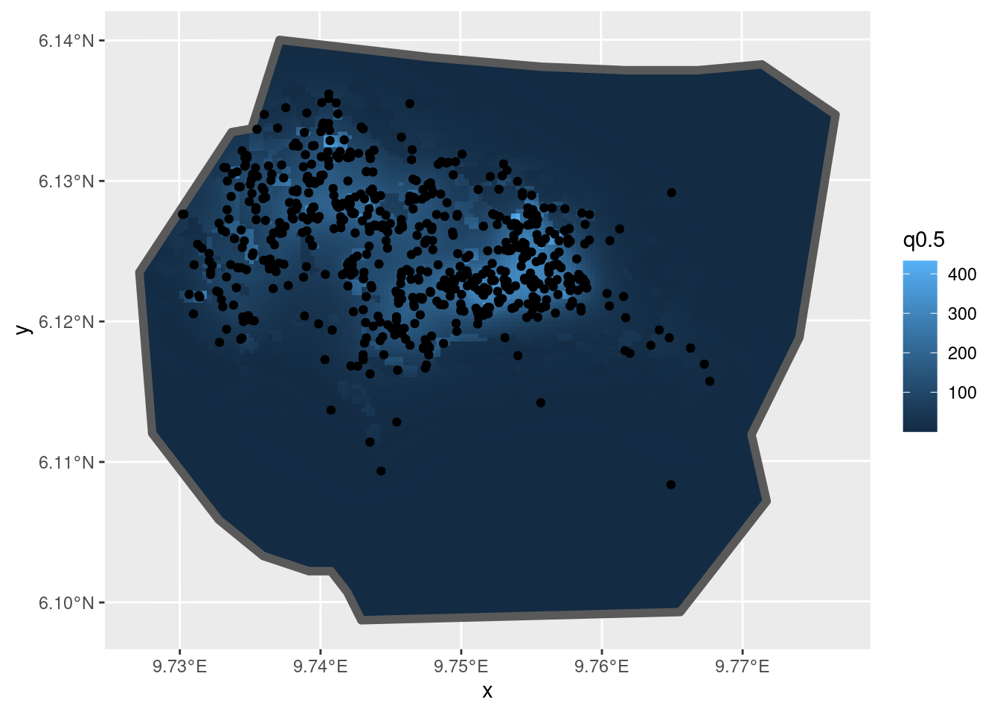
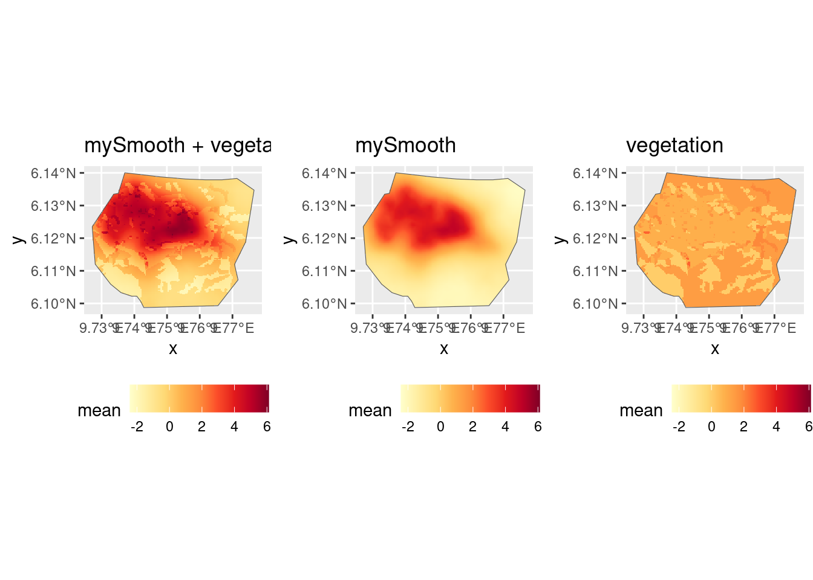
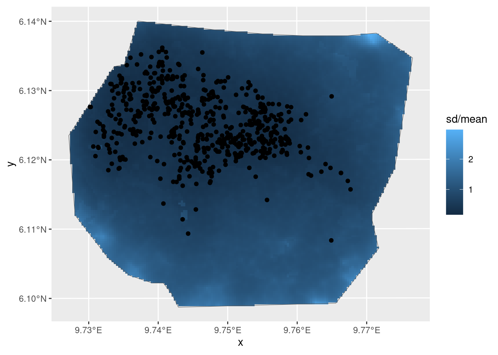
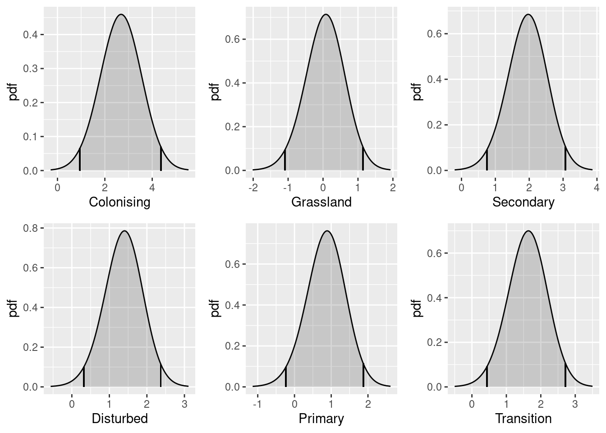
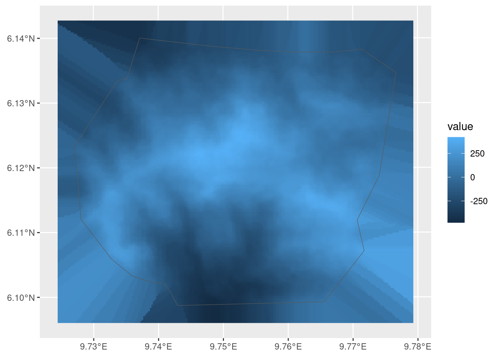
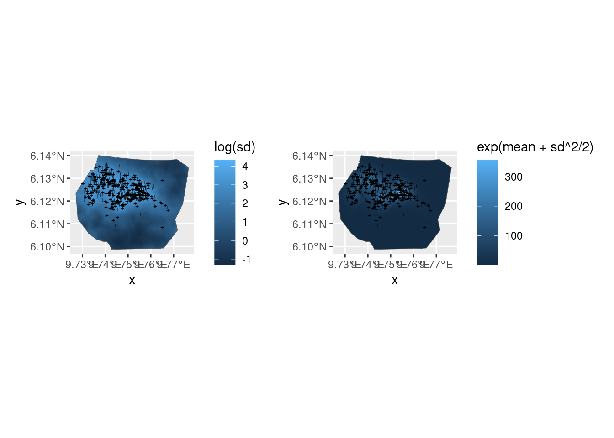
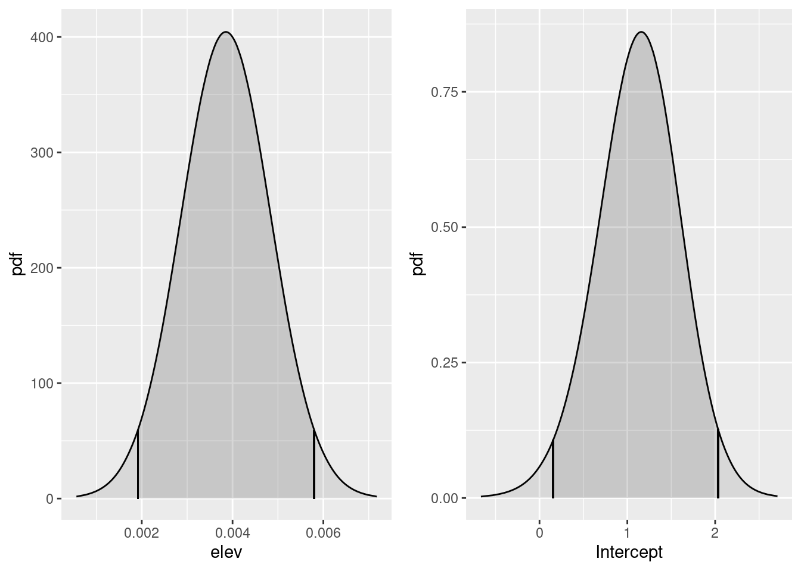
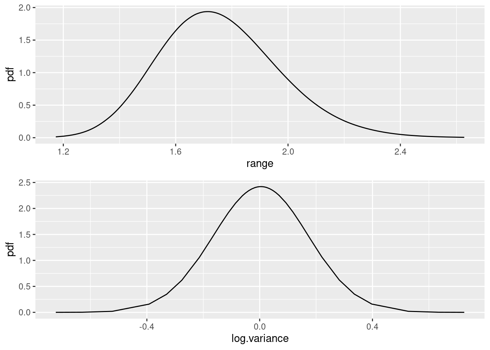
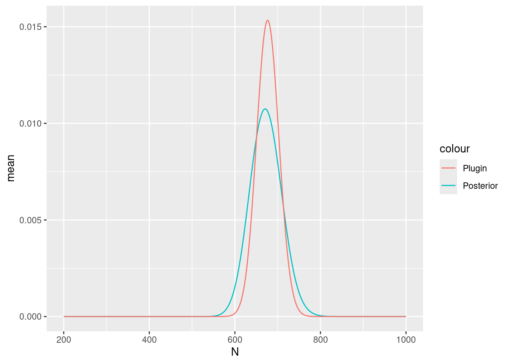
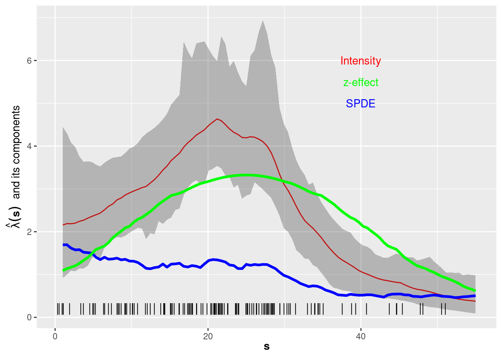

LGCPs - Spatial covariates
David Borchers and Finn Lindgren
Generated on 2024-09-20
Source:vignettes/articles/2d_lgcp_covars.Rmd
2d_lgcp_covars.RmdSet things up
library(INLA)
library(inlabru)
library(fmesher)
library(RColorBrewer)
library(ggplot2)
bru_safe_sp(force = TRUE)
bru_options_set(control.compute = list(dic = TRUE)) # Activate DIC outputIntroduction
We are going to fit spatial models to the gorilla data, using factor
and continuous explanatory variables in this practical. We will fit one
using the factor variable vegetation, the other using the
continuous covariate elevation
(Jump to the bottom of the practical if you want to start gently with a 1D example!)
Get the data
data(gorillas_sf, package = "inlabru")This dataset is a list (see help(gorillas_sf) for
details. Extract the objects you need from the list, for
convenience:
nests <- gorillas_sf$nests
mesh <- gorillas_sf$mesh
boundary <- gorillas_sf$boundary
gcov <- gorillas_sf_gcov()Factor covariates
Look at the vegetation type, nests and boundary:

Or, with the mesh:
ggplot() +
gg(gcov$vegetation) +
gg(mesh) +
gg(boundary, alpha = 0.2) +
gg(nests, color = "white", cex = 0.5)A model with vegetation type only
It seems that vegetation type might be a good predictor because
nearly all the nests fall in vegetation type Primary. So we
construct a model with vegetation type as a fixed effect. To do this, we
need to tell ‘lgcp’ how to find the vegetation type at any point in
space, and we do this by creating model components with a fixed effect
that we call vegetation (we could call it anything), as
follows:
comp1 <- geometry ~ vegetation(gcov$vegetation, model = "factor_full") - 1Notes: * We need to tell ‘lgcp’ that this is a factor fixed effect,
which we do with model="factor_full", giving one
coefficient for each factor level. * We need to be careful about
overparameterisation when using factors. Unlike regression models like
‘lm()’, ‘glm()’ or ‘gam()’, ‘lgcp()’, inlabru does not
automatically remove the first level and absorb it into an intercept.
Instead, we can either use model="factor_full" without an
intercept, or model="factor_contrast", which does remove
the first level.
comp1alt <- geometry ~ vegetation(gcov$vegetation, model = "factor_contrast") +
Intercept(1)Fit the model as usual:
Predict the intensity, and plot the median intensity surface. (In older versions, predicting takes some time because we did not have vegetation values outside the mesh so ‘inlabru’ needed to predict these first. Since v2.0.0, the vegetation has been pre-extended.)
The predict function of inlabru takes into
its data argument an sf object or other object
supported by the predictor evaluation code (for non-geographical data,
typically a data.frame). We can use the
inlabru function pixels to generate an
sf object with points only within the boundary, using its
mask argument, as shown below.
pred.df <- fm_pixels(mesh, mask = boundary)
int1 <- predict(fit1, pred.df, ~ exp(vegetation))
# gg() with sf points and geom = "tile" plots a raster
ggplot() +
gg(int1, geom = "tile") +
gg(boundary, alpha = 0, lwd = 2) +
gg(nests, color = "DarkGreen")Not surprisingly, given that most nests are in Primary
vegetation, the high density is in this vegetation. But there are
substantial patches of predicted high density that have no nests, and
some areas of predicted low density that have nests. What about the
estimated abundance (there are really 647 nests there):
A model with vegetation type and a SPDE type smoother
Lets try to explain the pattern in nest distribution
that is not captured by the vegetation covariate, using an SPDE:
pcmatern <- inla.spde2.pcmatern(mesh,
prior.sigma = c(0.1, 0.01),
prior.range = c(0.1, 0.01)
)
comp2 <- geometry ~
-1 +
vegetation(gcov$vegetation, model = "factor_full") +
mySmooth(geometry, model = pcmatern)And plot the posterior median intensity surface
int2 <- predict(fit2, pred.df, ~ exp(mySmooth + vegetation), n.samples = 1000)
ggplot() +
gg(int2, aes(fill = q0.5), geom = "tile") +
gg(boundary, alpha = 0, lwd = 2) +
gg(nests)
… and the expected integrated intensity (mean of abundance)
Lambda2 <- predict(
fit2,
fm_int(mesh, boundary),
~ sum(weight * exp(mySmooth + vegetation))
)
Lambda2
#> mean sd q0.025 q0.5 q0.975 median sd.mc_std_err
#> 1 678.3349 29.56702 623.6293 679.6036 733.112 679.6036 2.082301
#> mean.mc_std_err
#> 1 3.373162Look at the contributions to the linear predictor from the SPDE and from vegetation:
lp2 <- predict(fit2, pred.df, ~ list(
smooth_veg = mySmooth + vegetation,
smooth = mySmooth,
veg = vegetation
))The function scale_fill_gradientn sets the scale for the
plot legend. Here we set it to span the range of the three linear
predictor components being plotted (medians are plotted by default).
lprange <- range(lp2$smooth_veg$median, lp2$smooth$median, lp2$veg$median)
csc <- scale_fill_gradientn(colours = brewer.pal(9, "YlOrRd"), limits = lprange)
plot.lp2 <- ggplot() +
gg(lp2$smooth_veg, geom = "tile") +
csc +
theme(legend.position = "bottom") +
gg(boundary, alpha = 0) +
ggtitle("mySmooth + vegetation")
plot.lp2.spde <- ggplot() +
gg(lp2$smooth, geom = "tile") +
csc +
theme(legend.position = "bottom") +
gg(boundary, alpha = 0) +
ggtitle("mySmooth")
plot.lp2.veg <- ggplot() +
gg(lp2$veg, geom = "tile") +
csc +
theme(legend.position = "bottom") +
gg(boundary, alpha = 0) +
ggtitle("vegetation")
multiplot(plot.lp2, plot.lp2.spde, plot.lp2.veg, cols = 3)
A model with SPDE only
Do we need vegetation at all? Fit a model with only an SPDE +
Intercept, and choose between models on the basis of DIC, using
deltaIC().
comp3 <- geometry ~ mySmooth(geometry, model = pcmatern) + Intercept(1)
fit3 <- lgcp(comp3,
data = nests,
samplers = boundary,
domain = list(geometry = mesh)
)
int3 <- predict(fit3, pred.df, ~ exp(mySmooth + Intercept))
ggplot() +
gg(int3, geom = "tile") +
gg(boundary, alpha = 0) +
gg(nests)
Lambda3 <- predict(
fit3,
fm_int(mesh, boundary),
~ sum(weight * exp(mySmooth + Intercept))
)
Lambda3
#> mean sd q0.025 q0.5 q0.975 median sd.mc_std_err
#> 1 670.6227 27.82254 615.1509 667.3549 725.4227 667.3549 2.054993
#> mean.mc_std_err
#> 1 3.193253| Model | DIC | Delta.DIC |
|---|---|---|
| fit1 | -562.5418 | 0.000 |
| fit3 | 525.1865 | 1087.728 |
| fit2 | 619.0161 | 1181.558 |
NOTE: the behaviour of DIC is currently a bit unclear, and is being investigated. WAIC is related to leave-one-out cross-validation, and is not appropriate to use with the current current LGCP likelihood implementation.
Classic mode:
| Model | DIC | Delta.DIC |
|---|---|---|
| fit2 | 2224.131 | 0.00000 |
| fit3 | 2274.306 | 50.17504 |
| fit1 | 3124.784 | 900.65339 |
Experimental mode:
| Model | DIC | Delta.DIC |
|---|---|---|
| fit1 | -563.3583 | 0.000 |
| fit3 | 509.4010 | 1072.759 |
| fit2 | 597.6459 | 1161.004 |
CV and SPDE parameters for Model 2
We are going with Model fit2. Lets look at the spatial
distribution of the coefficient of variation

Plot the vegetation “fixed effect” posteriors. First get their names
- from $marginals.random$vegetation of the fitted object,
which contains the fixed effect marginal distribution data
flist <- vector("list", NROW(fit2$summary.random$vegetation))
for (i in seq_along(flist)) flist[[i]] <- plot(fit2, "vegetation", index = i)
multiplot(plotlist = flist, cols = 3)
Use spde.posterior( ) to obtain and then plot the SPDE
parameter posteriors and the Matern correlation and covariance functions
for this model.
spde.range <- spde.posterior(fit2, "mySmooth", what = "range")
spde.logvar <- spde.posterior(fit2, "mySmooth", what = "log.variance")
range.plot <- plot(spde.range)
var.plot <- plot(spde.logvar)
multiplot(range.plot, var.plot)
corplot <- plot(spde.posterior(fit2, "mySmooth", what = "matern.correlation"))
covplot <- plot(spde.posterior(fit2, "mySmooth", what = "matern.covariance"))
multiplot(covplot, corplot)Continuous covariates
Now lets try a model with elevation as a (continuous) explanatory variable. (First centre elevations for more stable fitting.)
elev <- gcov$elevation
elev <- elev - mean(terra::values(elev), na.rm = TRUE)
ggplot() +
gg(elev, geom = "tile") +
gg(boundary, alpha = 0)
The elevation variable here is of class ‘SpatRaster’, that can be
handled in the same way as the vegetation covariate, with automatic
evaluation via an eval_spatial() method. However, since in
some cases data may be stored differently, other methods are needed to
access the stored values, or there’s some post-processing to be done. In
such cases, we can define a function that knows how to evaluate the
covariate at arbitrary points in the survey region, and call that
function in the component definition. The method
eval_spatial() is the method that handles this
automatically, and supports terra SpatRaster
and sf geometry points objects, and mismatching coordinate
systems as well. In the following evaluator example function, we only
add infilling of missing values as a post-processing step.
# Note: this method is usually not needed; the automatic invocation of
# `eval_spatial()` method by the component input evaluator is usually
# sufficient.
f.elev <- function(where) {
# Extract the values
v <- eval_spatial(elev, where, layer = "elevation")
# Fill in missing values; this example would work for
# SpatialPixelsDataFrame data
# if (any(is.na(v))) {
# v <- bru_fill_missing(elev, where, v)
# }
return(v)
}For brevity we are not going to consider models with elevation only, with elevation and a SPDE, and with SPDE only. We will just fit one with elevation and SPDE. We create our model to pass to lgcp thus:
matern <- inla.spde2.pcmatern(mesh,
prior.sigma = c(0.1, 0.01),
prior.range = c(0.1, 0.01)
)
ecomp <- geometry ~ elev(f.elev(.data.), model = "linear") +
mySmooth(geometry, model = matern) + Intercept(1)Note how the elevation effect is defined. We could alternatively use
the terra grid object directly (causing
inlabru to automatically call eval_spatial()),
like in the vegetation case: we specified it like
elev(elev, model = "factor_full")whereas with the special function method we specify the covariate like this:
elev(f.elev(.data.), model = "linear")Most applications can use the automatic method, and the special function method is included only as an example of how to handle more complex cases.
We also now include an intercept term in the model.
The model is fitted in the usual way:
Summary and model selection
summary(efit)
#> inlabru version: 2.11.1.9010
#> INLA version: 24.09.14
#> Components:
#> elev: main = linear(f.elev(.data.)), group = exchangeable(1L), replicate = iid(1L), NULL
#> mySmooth: main = spde(geometry), group = exchangeable(1L), replicate = iid(1L), NULL
#> Intercept: main = linear(1), group = exchangeable(1L), replicate = iid(1L), NULL
#> Likelihoods:
#> Family: 'cp'
#> Data class: 'sf', 'data.frame'
#> Response class: 'numeric'
#> Predictor: geometry ~ .
#> Used components: effects[elev, mySmooth, Intercept], latent[]
#> Time used:
#> Pre = 0.344, Running = 4.68, Post = 0.431, Total = 5.46
#> Fixed effects:
#> mean sd 0.025quant 0.5quant 0.975quant mode kld
#> elev 0.004 0.001 0.002 0.004 0.006 0.004 0
#> Intercept 1.125 0.478 0.151 1.136 2.037 1.136 0
#>
#> Random effects:
#> Name Model
#> mySmooth SPDE2 model
#>
#> Model hyperparameters:
#> mean sd 0.025quant 0.5quant 0.975quant mode
#> Range for mySmooth 1.76 0.217 1.376 1.75 2.23 1.714
#> Stdev for mySmooth 1.00 0.085 0.848 1.00 1.18 0.995
#>
#> Deviance Information Criterion (DIC) ...............: 521.26
#> Deviance Information Criterion (DIC, saturated) ....: 520.43
#> Effective number of parameters .....................: -825.43
#>
#> Watanabe-Akaike information criterion (WAIC) ...: 1604.04
#> Effective number of parameters .................: 153.51
#>
#> Marginal log-Likelihood: -1254.95
#> is computed
#> Posterior summaries for the linear predictor and the fitted values are computed
#> (Posterior marginals needs also 'control.compute=list(return.marginals.predictor=TRUE)')
deltaIC(fit1, fit2, fit3, efit)
#> Model DIC Delta.DIC
#> 1 fit1 -562.5418 0.000
#> 2 efit 521.2575 1083.799
#> 3 fit3 525.1865 1087.728
#> 4 fit2 619.0161 1181.558Predict and plot the density
e.int <- predict(efit, pred.df, ~ exp(mySmooth + elev + Intercept))
e.int.log <- predict(efit, pred.df, ~ (mySmooth + elev + Intercept))
p1 <- ggplot() +
gg(e.int, aes(fill = log(sd)), geom = "tile") +
gg(boundary, alpha = 0) +
gg(nests, shape = "+")
p2 <- ggplot() +
gg(e.int.log, aes(fill = exp(mean + sd^2 / 2)), geom = "tile") +
gg(boundary, alpha = 0) +
gg(nests, shape = "+")
library(patchwork)
p1 | p2
Now look at the elevation and SPDE effects in space. Leave out the Intercept because it swamps the spatial effects of elevation and the SPDE in the plots and we are interested in comparing the effects of elevation and the SPDE.
First we need to predict on the linear predictor scale.
e.lp <- predict(
efit,
pred.df,
~ list(
smooth_elev = mySmooth + elev,
elev = elev,
smooth = mySmooth
)
)The code below, which is very similar to that used for the vegetation factor variable, produces the plots we want.
lprange <- range(e.lp$smooth_elev$mean, e.lp$elev$mean, e.lp$smooth$mean)
library(RColorBrewer)
csc <- scale_fill_gradientn(colours = brewer.pal(9, "YlOrRd"), limits = lprange)
plot.e.lp <- ggplot() +
gg(e.lp$smooth_elev, mask = boundary, geom = "tile") +
csc +
theme(legend.position = "bottom") +
gg(boundary, alpha = 0) +
ggtitle("SPDE + elevation")
plot.e.lp.spde <- ggplot() +
gg(e.lp$smooth, mask = boundary, geom = "tile") +
csc +
theme(legend.position = "bottom") +
gg(boundary, alpha = 0) +
ggtitle("SPDE")
plot.e.lp.elev <- ggplot() +
gg(e.lp$elev, mask = boundary, geom = "tile") +
csc +
theme(legend.position = "bottom") +
gg(boundary, alpha = 0) +
ggtitle("elevation")
multiplot(plot.e.lp,
plot.e.lp.spde,
plot.e.lp.elev,
cols = 3
)You might also want to look at the posteriors of the fixed effects and of the SPDE. Adapt the code used for the vegetation factor to do this.
LambdaE <- predict(
efit,
fm_int(mesh, boundary),
~ sum(weight * exp(Intercept + elev + mySmooth))
)
LambdaE
#> mean sd q0.025 q0.5 q0.975 median sd.mc_std_err
#> 1 673.1547 27.45659 618.7775 674.7419 723.8341 674.7419 1.961147
#> mean.mc_std_err
#> 1 3.137888
flist <- vector("list", NROW(efit$summary.fixed))
for (i in seq_along(flist)) {
flist[[i]] <- plot(efit, rownames(efit$summary.fixed)[i])
}
multiplot(plotlist = flist, cols = 2)
Plot the SPDE parameter posteriors and the Matern correlation and covariance functions for this model.
spde.range <- spde.posterior(efit, "mySmooth", what = "range")
spde.logvar <- spde.posterior(efit, "mySmooth", what = "log.variance")
range.plot <- plot(spde.range)
var.plot <- plot(spde.logvar)
multiplot(range.plot, var.plot)
corplot <- plot(spde.posterior(efit, "mySmooth", what = "matern.correlation"))
covplot <- plot(spde.posterior(efit, "mySmooth", what = "matern.covariance"))
multiplot(covplot, corplot)Also estimate abundance. The data.frame in the second
call leads to inclusion of N in the prediction object, for
easier plotting.
Lambda <- predict(
efit, fm_int(mesh, boundary),
~ sum(weight * exp(mySmooth + elev + Intercept))
)
Lambda
#> mean sd q0.025 q0.5 q0.975 median sd.mc_std_err
#> 1 676.2838 26.89344 630.7753 677.0602 727.7334 677.0602 2.181809
#> mean.mc_std_err
#> 1 3.125706
Nest.e <- predict(
efit,
fm_int(mesh, boundary),
~ data.frame(
N = 200:1000,
density = dpois(200:1000,
lambda = sum(weight * exp(mySmooth + elev + Intercept))
)
),
n.samples = 2000
)Plot in the same way as in previous practicals
Nest.e$plugin_estimate <- dpois(Nest.e$N, lambda = Lambda$median)
ggplot(data = Nest.e) +
geom_line(aes(x = N, y = mean, colour = "Posterior")) +
geom_line(aes(x = N, y = plugin_estimate, colour = "Plugin"))
Non-spatial evaluation of the covariate effect
The previous examples of posterior prediction focused on spatial
prediction. From inlabru version 2.2.8, a feature is
available for overriding the component input value specification from
the component definition. Each model component can be evaluated
directly, for arbitrary values by functions named by adding the suffix
_eval to the end of the component name in the predictor
expression, and disabling normal component evaluation for all components
with include = character(0) (since we’re both bypassing the
normal input to the elev component, and not supplying data
for the other components). From version 2.8.0,
inlabru attempts to automatically detect which model
components are used in the expression, and the include
argument can be left out entirely.
Since the elevation effect in this model is linear, the resulting plot isn’t very interesting, but the same method can be applied to non-linear effects as well, and combined into general R expressions.
elev.pred <- predict(
efit,
data.frame(elevation = seq(0, 100, length.out = 1000)),
formula = ~ elev_eval(elevation)
# include = character(0) # Not needed from version 2.8.0
)
ggplot(elev.pred) +
geom_line(aes(elevation, mean)) +
geom_ribbon(
aes(elevation,
ymin = q0.025,
ymax = q0.975
),
alpha = 0.2
) +
geom_ribbon(
aes(elevation,
ymin = mean - 1 * sd,
ymax = mean + 1 * sd
),
alpha = 0.2
)A 1D Example
Try fitting a 1-dimensional model to the point data in the
inlabru dataset Poisson2_1D. This comes with a
covariate function called cov2_1D. Try to reproduce the
plot below (used in lectures) showing the effects of the
Intercept + z and the SPDE. (You may find it
helpful to build on the model you fitted in the previous practical,
adding the covariate to the model specification.)
data(Poisson2_1D)
ss <- seq(0, 55, length = 200)
z <- cov2_1D(ss)
x <- seq(1, 55, length = 100)
mesh <- fm_mesh_1d(x, degree = 1)
comp <- x ~
beta_z(cov2_1D(x), model = "linear") +
spde1D(x, model = inla.spde2.matern(mesh)) +
Intercept(1)
fitcov1D <- lgcp(comp, pts2, domain = list(x = mesh))
pr.df <- data.frame(x = x)
prcov1D <- predict(
fitcov1D,
pr.df,
~ list(
total = exp(beta_z + spde1D + Intercept),
fx = exp(beta_z + Intercept),
spde = exp(spde1D)
)
)
ggplot() +
gg(prcov1D$total, color = "red") +
geom_line(aes(x = prcov1D$spde$x, y = prcov1D$spde$median),
col = "blue", lwd = 1.25) +
geom_line(aes(x = prcov1D$fx$x, y = prcov1D$fx$median),
col = "green", lwd = 1.25) +
geom_point(data = pts2, aes(x = x), y = 0.2, shape = "|", cex = 4) +
xlab(expression(bold(s))) +
ylab(expression(hat(lambda)(bold(s)) ~ ~"and its components")) +
annotate(geom = "text", x = 40, y = 6, label = "Intensity", color = "red") +
annotate(geom = "text", x = 40, y = 5.5, label = "z-effect",
color = "green") +
annotate(geom = "text", x = 40, y = 5, label = "SPDE", color = "blue")